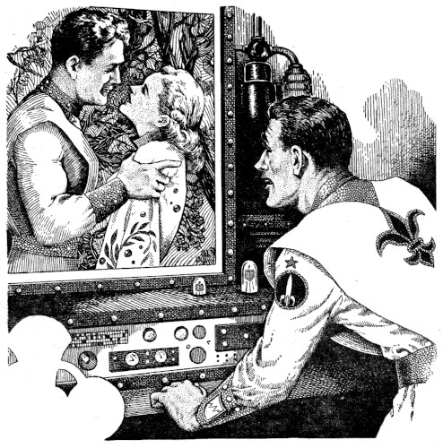

[Transcriber's Note: This etext was produced from
Startling Stories Summer 1955.
Extensive research did not uncover any evidence that
the U.S. copyright on this publication was renewed.]
Excerpt taken from "THE HISTORY OF TRIAL PROCEDURE, 2175 TO 2543, A.D." written by Prof. A. I. Schule, S.E.D.:
"Even then, in the beginning of the twenty-third century, crime per se, itself had ceased to exist. The lower emotions had already been bred out of the people. Envy, hate, avarice and kindred responses were virtually non-existent. Every citizen had a crude type of emotiograph attached to his person, which was examined periodically by the Eye. If any deviation from the norm was observed, the accused was called up for questioning.
"In the absence of actual crime, any emotion which might have precipitated crime was considered unlawful, and men were tried for too much anger, or too little pity. The only purpose of a trial was to ascertain whether sufficient provocation could be established to warrant a given reaction. If the cause, or the incident, justified the emotional response, the defendant was exculpated.
"Trial procedure was extremely simple. The use of the witness was obsolete. Above the defendant's box was a concentric screen upon which his thoughts could be projected. The Questioner would channel the thoughts of the accused into whatever date periods were pertinent, and in that way, the defendant reviewed his own case.
"It is into this category that the celebrated, and very controversial, John Hastings case falls. You all remember that, of course, as the 'cause cêlêbre' of the year 2375 A.D."
No. Amer. Sec., Book Two, p. 675.
One night they watched a column of flame lift a silver speck into the sky. And one night, much later, they heard a voice call into space, saying, "Come back, John Hastings, come back.
"Our inspection has shown serious deviations in your emotiograph. You will turn your rocket and rechart for Earth, John Hastings. For trial, John Hastings."
And they came to the trial. Out of the ripe, wet hills, down from the blistering dome over the city, up through the shafts of the gritty Substructure. They came and stood in lines, wiping the August sweat from their eyes, littering the levels with orange peels as they ate. Women, with babies strapped to their shoulders, and suppers left unradiated on the cooker. Men, with lead-shielded faces, and tools laid aside in the middle of a movement. But they came, and stood and jostled one another, milling and gossiping:
"Gonna be some trial!"
"... might even resort to electrocution...."
"Naw, that's dark time methods."
"Oh yeah?"
Oh yeah, oh yeah, oh yeah....
But they felt good, the people, for it wasn't their trial. The words could come easy and undammed, for it was John Hastings who was on trial. They could look at him all they wanted to, and talk.
And then, suddenly, they could look at me too. Because I was called as the thirteenth juror on the John Hastings trial.
I walked into it after a night that held no sleep. And looked at it. The yawning amphitheatre where humanity poured. And saw it. The thirteen chairs raised high in the center. And heard it. The crowd's susurrus gentling under insistent reminders from a bodiless Questioner.
I glanced at the faces in the other twelve boxes, recognizing some of them. Angus Vortler, the psychosurgeon. William Bax, head of Intergalactic, a bleak, wintery man who doodled constantly. Dollar signs, probably. Fred Kitson, of the horny palms, chief mechanic on the Darkness. All men who, because they had once reached out and touched hands with John Hastings, were now called to judge him. Several of them nodded to me as I took my place.
Wait.
They brought him in. I remembered the first time I had ever seen him, in the classroom. Eager and tall ... tall and eager. Lord, what changed him? Something had taken the straightness from his shoulders, the sureness from his stride. There were furrows on his face where the tears had already been.
He stood silently in the box where they had put him. A box just big enough for his bulky body, and maybe a little of the misery he carried with him.
A voice spoke.
"This, John Hastings, is your trial. You stand before this Court of Truth-Probity, accused of registering the emotion of hate. A hatred so violent, that had we permitted you to carry out your anticipated actions, it would have resulted in the murder of one Mary Hastings, your wife. Do you understand the charge?"
"I do." He didn't know what to do with his hands.
"How do you plead?"
"I plead not guilty."
"On what ground?" asked the voice.
The defendant raised his head. "On the ground that I had good and sufficient reason to justify my emotion."
"The reactographs on your wife, Mary Hastings, have been thoroughly examined, and it has been determined that she performed no act which in any way deviated from the norm. Had any disturbances taken place within Mary Hastings during the week of last March ninth to sixteenth, it would have shown up plainly in a flux on the charts. Your contention is impossible."
The man in the box bit his lip. "Nevertheless, I contend it. My wife gave me sufficient reason. She—she was unfaithful to me."
Only silence for a full minute.
"It is impossible."
"But true!" Hastings shouted.
The multitude leaned forward, a misted inquiry rustling its skirts.
"Very well," the voice almost sighed. "Will you submit, Captain Hastings, to the use of the concentric screen? We wish to know more of the circumstances surrounding several pertinent dates."
His face was the color of picked bones. "Yes, I will submit."
Two men advanced carrying a mesh complexity between them. Placing it over the defendant's head they allowed it to fall to his shoulders.
"Are you ready, John Hastings?"
"Yes." It seemed he was already gone from the place.
"Then concentrate. Remember. Permit your mind to have freedom." The voice washed over him in waves. "It is a day in December ... the fourteenth.... Take my words and let them carry you...."
The screen above the defendant's head began to cloud and draw in.
"It is cold outside ... the snow is falling. There is a warm room. A fire is burning...."
The mists opalesced and formed a nucleus.
"There is a pool of light on the desk, unexpected flowers in a bowl, the odor of duck, roasted brown...."
Something was struggling for existence in the screen.
"There is a brown-haired woman—"
And the image was born....
She bent over a card. "Candlelight, best service for two, white wine, celebration atmosphere," she wrote and put it into the dining table selector. Somewhere an orchestra started playing Debussy.
"John," she called. "Almost ready."
A card shot back at her from the mirror as she passed. "Your nose is shiny," it read. She powdered quickly, taming wisps of hair as an afterthought.
"Any further comments?" she wanted to know, and held out her hand. A second card appeared. "I can't whistle."
Her laughter brimmed over, laced in delight. "John, dinner's ready."
She called into three rooms, empty rooms. Crossing to the terrace, she opened a door on the night. Snowflakes rode in on an icy draft.
"Well?"
"John! What are you doing out there? I can't even see you."
"That seems to be one of your habits recently."
She drew him inside, and leaned against the door, closing. "Is it going to be like that tonight?"
"Maybe." His face was steeped in cold.
"Please. Not the day before you go."
The white crystals on his hair melted into drops, and a sudden warmth strained all harshness from his voice. "No, you're right, Mary. Not the day before I go."
Pushing him toward the fire, Mary took his cloak. "Didn't you notice?"
"What?"
"The table, silly. It's 'Happy Homecoming' tonight!"
"Leavestaking, you mean."
"No, homecoming. It's not December. It's August. You've just opened the front door and said, 'Mary, I'm home!' And all the time in between hasn't been. It never will be."
He smiled for the first time.
"Now that's better."
The woman handed John Hastings a goblet, plump with yellow liquid. "To August, dear," she said, and raised her glass. "To the moment your foot touches Earth again. And to the wine ... warm and golden, like our life together."
"Let's eat," he said. "Let's not ask questions." He faltered in a lack of direction.
"Wait a minute."
"For what?"
"For the questions you can't ask." The gaiety was gone. It was real now. "I think it's time we swept out the corners."
John nodded, his face slack.
"You've been strange lately."
"Oh that!" he shrugged. "Let's say it's the getting ready ... the heart plunge just before you jump into space."
"No." It was definite. "It's more than that. You've been a rocket man all your life. You don't get nervous any more."
His fingers twisted the glass. Something else twisted his voice. "There are things in it that might make a man nervous, Mary. Black winds. Burning worlds. Holes in space waiting for him. You think it might be that, Mary?"
"No."
"But this is Alpha Centauri. This is faster-than-light." He bowed. "This is when baby-God Hastings tests his brain child ... when the electron lightscope goes to bat. You think it might be that, Mary?"
"Don't make nasty fun."
Her husband regarded her a long, serious moment. "No. You're right again." Leaning in to her, he spoke softly. "Did you know, Mary, that it isn't the big things that make a man nervous any more? Only the little things—"
"Say it!" she insisted. "Get it out. You'll feel better."
He hadn't moved. "Just the very little things. A supper unradiated. An empty wrap hanger. An unfilled chair. Emptiness where there should be something."
"Where has there been emptiness?" Mary was surprised.
"Between us."
"Oh darling ... that just isn't so."
"Isn't it?" He took her hands. "Cards on the table, Mary. Right?"
"Right!"
"You've been going to meetings for the last month."
"It's my turn on the committee."
"You've been out late quite a bit."
"I can't leave till they check me out...."
"There have been other people there."
She pulled her hands away and escaped to the other side of the room. "Lots of them."
"But there was one face in particular."
"Oh." There was a finality in it. "Who told you?"
"Does that matter?" His hand waved it aside. "Why didn't you tell me Charles Lathrop was on the committee with you?"
"Because I knew how you'd feel." Instantly, she was at his side. "Oh darling, don't you suppose I know what you think? You've never accepted the fact that when I married you, my feeling for him was over and done."
"Is that true?"
"Yes, yes, yes! Can't you understand? What I felt for him four or five years ago was that young thing everyone goes through."
"Young things grow. Great oaks...."
"Not this one. When you came, it was over. Is over."
He shook his head, and passed his hand over his face. "God knows I want to believe that. You're my wife, Mary. I love every bit of you. But Lathrop keeps bobbing up."
The fire crackled like dry leaves, rouging the unhappy walls. "There are more questions?" she wanted to know.
"Yes."
"Ask them."
"Did you know he was going to be on the committee?"
"Of course not."
"Forgive me, Mary, but—but have you spent any extra time with him?"
"Oh John! We talk at the meetings—'Hello—it's a roaring day—have you heard the latest about Ganymede?'"
"That's all?"
"I swear."
"You don't feel anything?"
"Nothing. Absolutely nothing. He's a friend, a brother, a comfortable dog."
The stiffness went out of Hastings. He sank back breathing hard, as if he had been running too fast. "Mary, you don't know how good that hears. You just don't know!"
"Oh my darling!" She held his head in her arms, her mouth close to his ear. "Has it been this, all these months?"
The man nodded, laughing a little. "I just couldn't take the thought that maybe—"
"Hush, hush! Don't even say it any more. Drink the wine and remember what I said ... 'To its warm glow, like our home together.'"
His hand reached out, and trembling slightly, the fingers grasped, and fumbled, and clutched at air. The glass shattered prettily, spilling its golden life on the unalterable stone throat of the hearth.
And they stood there, hands untouching. Watching the glistening fragments trap the last warm glow of the fire.
"Enough, enough," a voice said. "You will rechannel your thoughts, Captain Hastings. There is another day in time."
The screen misted, and the veils swirled.
"March eleventh ... on a ship ... a glazed splinter in blackness...."
The curtains quivered.
"Men gather tight against the void ... a clarinet wails ... there is the smell of sweat...."
Kitson and Holmes were doing a dance. They had their breechskins rolled over their knees, and four grapefruit tied to their fronts.
"Take it off ... take it off ... take it off!" The men rode a ground swell of tinny music. Rhythm stamped out in the pattern of magnetic boots fought with the sucking sound of beer cans. The air curled with smoke.
Above their heads a hatch opened, and the Captain's legs appeared, descending ladderwise. Abruptly, the melee subsided into leftover clarinet tones.
"Mr. Kitson."
Kitson brought himself to attention, his grapefruit swinging. "Sir?"
"I've been informed there was news from home." The men looked at one another.
"Only the broadcast from the Sector, sir. Nothing unusual."
"You took it down on the tapes?"
"Yes, sir."
"I should like to hear it." From one corner a reluctant shuffling replaced the lately dead downbeats. The reproducer scratched badly.
"... at a banquet given for members of the committee. Prominent among the guests was Mrs. Mary A. Hastings, wife of Captain John Hastings who is making history in his FTL flight to Alpha Centauri. Captain Hastings will test his invention, the electron-lightscope, from our neighboring sun. It is reliably reported that the lightscope will revolutionize astral observation, in that it will replace the telescope, and will bring distant galaxies to within a few hundred feet of the earth.
"Mrs. Hastings, smartly gowned, was seated next to Co-ordinator Charles Lathrop, who had—"
Someone jostled into the machine. The groove was lost.
Hastings spoke slowly. "I'd like to hear the rest of it."
Kitson was carefully unrolling his breechskins.
"I'd like to hear the rest of it, I said."
"Yes, sir," someone murmured.
"... was seated next to Charles Lathrop, who had escorted her to the banquet, in the absence of the Captain. They danced frequently to the strains of the Deimos Orchestra which was rocketed here for the pro—"
"That's enough," said Hastings, staring whitely.
The mechanic took two steps toward him. "Is something wrong, sir? You look ill."
"Not at all, Mr. Kitson, not at all." His eyes snapped back to the man in front of him, astraddle a newborn idea. "I was merely considering Peeping Toms, Mr. Kitson."
"Beg pardon, Sir?"
"Peeping Toms. Never heard of them, have you?"
"No, sir. I don't think any of us have."
"What a pity. A most fascinating subject. Found in a twentieth century history of the minor vices."
"Yes, sir."
"You display no curiosity, Mr. Kitson." His eyebrows raised. "In this, you differ significantly from our Peeping Tom. He wanted to know a great many things, and he settled the whole matter with a pair of binoculars." His voice sounded like scraped stone. "Yes indeed—a pair of binoculars."
"I'm afraid I wasn't subjected to that facet of knowledge indoctrination, sir." Kitson shrugged imperceptibly. When the captain got like this—his shoulders spoke for him.
Hastings had caught the movement, however. "You find my words uninstructive?"
"No, sir—I mean—"
"Very well." Something was growing big in the man. "Since you view your deficiencies so lightly, you may report for punishment duty in the morning."
"But, sir! I only said—"
"That will be all, Mr. Kitson." Hastings climbed the ladder, an ear splitting silence hurrying him upward. His face appeared through the hatch. A face withdrawn behind vacant eyes, ready to crumble. "Remember, Kitson, I'll see you topside tomorrow. You will endeavor to compensate for this most regrettable omission in your education, while I—I will contemplate the advantages of twentieth century sins."
The hatch closed.
Everyone was suddenly very busy. Holmes picked up empty beer containers and threw them into the deatomizer. A big sandy man laced and unlaced the binding-pad on his bunk. Kitson sat down and stared vacantly.
After three or four minutes he said something.
"The sonovagun," he said. "The poor, poor, sonovagun."
Impersonal words broke into the dream. "We have seen. It is sufficient." The screen flickered and grew dim. "Can you stand further probing, Captain? May we proceed?"
"Yes."
"There is yet one more time. March fifteenth."
"I remember."
"Then relax ... drift. There are two men. They hang above a yellow sun ... space sleeps at their feet...."
An image formed and wavered and formed again.
"Their words are whispered ... they speak softly in the presence of immensity...."
It crystallized....
"I'm asking as Vortler, your friend. Not Vortler, the psychosurgeon."
Side by side, they sat in the tattered light of the observation hull. Centauri lay less than one day ahead. It dangled like a full, blush peach, their silhouette its only bruised spot. Rockets hummed.
"There's no use asking any more questions Angus. The time for questions is past. This is exams."
"That's what I mean, John. Remarks like that. You've gotten to be a man who talks to himself."
Hastings sat without moving a muscle. "What did the men tell you?"
"Nothing actually." The other made a nasty sound. "No, that's true. I didn't need them. I've seen it for myself this entire trip."
"And how do you diagnose it, Doctor?" A whisky bottle gleamed in the light of the creamy sun.
"Just like that, he wants it. In two or three words. Where I need books, where Freud took volumes, he wants it in two or three words."
"And the doctor doesn't have them," John said. Angus shook his head. "But I do." He poured from the bottle. "She's seeing Charles."
Vortler snorted. "You're mistaken."
"No, I'm not. I've thought about her a lot these last three months, and I think I know her now." He leaned his head back and shut his eyes. "She's an August woman, Angus. An August woman. One night a warm breeze comes through the door and sweeps a girl into your arms. You say things, and she says things, and you both end up saying 'I do!' Then she wakes up one morning to find she doesn't any more. And another door will open, another breeze carry her off."
"Mary's not like that."
"I didn't think so in the beginning."
"You surprise me, John. I thought you had more faith."
"Not any more. With me, it's what I can touch or smell or hear or see. Nothing more."
"Then there's never any proof for you. You can't watch her every minute."
John raised himself unsteadily, and stitched his finger into the air. "That, my dear Doctor, is where you are wrong." He stood and groped his way into the light of the cabin. Angus followed, trying to see his face.
"There is something more to this, John. Let's stop the riddles and say what we mean."
The captain spun in sharp, stifled anger. "Shall I tell you, Angus? Shall I let you in on my secret?" The anger detonated. "All right, damn it! You came here for it. I'll give it to you! You know my lightscope? Well, it works. It works fine!"
"What has this—?"
"Do you know what Johnny-boy has been doing with the blasted thing?" he cried, "I've been using it to play inquirer. I've been using it to spy on my wife."
The doctor's jaw dropped. "You have what?"
"That's right. Night after night, I've come back here. I've set up the god-dammed thing—and I've scanned."
"This is incredible!"
"Three nights ago I found New York. Two nights ago, I co-ordinated to the Hudson River. Last night I got as far as the third level. Tonight—" his arms swept a circle—"East Lynne."
Vortler's hand smashed down. "It's got to stop! There's no reason for this. I won't permit it."
"What can you do? It's my lightscope—my ship. My orders supersede yours."
Vortler closed the space between them, his fists knobbed white. John laughed. "Don't overdo it, Angus. I'm not worth it." The sound died to a chuckle, "Besides, remember your emotiograph. Somebody will spank."
The doctor's hands opened slowly, a finger at a time.
"Tell me, Angus. Can you honestly blame me? I suspect my wife. I'm trying to find out."
"But you're wrong!"
"It could be. The thing is possible." He leaned toward the psychosurgeon. "You think about it and tell me. It's possible?"
Vortler looked defeated.
"Yes."
"And that's that."
Angus started for the barway. "I don't know what started this thing off, John. Perhaps if a man loves his wife a little too much, a thing like this can happen. Maybe that's why they've watched our charts so carefully."
Hastings was already talking to himself. "If I can just prove it one way or the other. If I can just know she's—alone."
The white clad figure paused. "Think it over, John. Change your mind. I don't like any part of it."
"Angus," John said softly. "I don't like it either. I don't want the sight of Mary on that lens! To leave what print? A dream smashed? A dishonor? Who knows?"
The doctor shook his head. "Look out the viewplate, John. What do you see? Planet systems, galaxies, eons. What is one tiny less-than-a-mite in all of that? What does it mean to you? The mind of the Almighty—or a few cents worth of bone, and hair, and tissue? Ask yourself, John. What do you see?"
He closed the barway behind him.
John followed and threw the pressure lock. Going to a sleek instrument, his hands inquired softly along its lines. Cold as space. Sure. Doubt proof. He swept the litter from his desk, and set the instrument in its center. Levers spun, mirrors sent out chips of light, adjusters adjusted.
Then, pausing, he moved to the viewplate and stood looking out a long time. His hands mangled themselves constantly behind his back. A star twinkled—one star in particular—as if through the prism of a cold tear.
But he went back to the instrument, and bent to it slowly. And as he gripped the desk, his knuckles erupted, pale as washed gravestones....
And the graph lines shivered and glowed hot, and the hate came pouring out of the shining needle between the stars, and somewhere a voice called into space....
"Come back, John Hastings, come back," the Questioner said. "You may return to the present."
Throbbing, the screen died as a stirring exhalation came from the crowd. Someone asked for more air. A baby cried, and was lulled to sleep.
"We have seen the pictures, Captain Hastings, and we accept them. The facts were presented as they happened. It is unfortunate that we can show no evidence of what reached John Hastings' eye as he looked into the electron-lightscope. Mechanical tabulations cannot be transmitted to our screen, since its envisioning powers are limited to the sensory memory patterns of the brain. We must therefore go to the defendant himself for further evidence."
They had removed the heavy mesh, but the captain's head remained bowed.
"Do you swear, John Hastings, that by the power of the God whom we know to be, and by the strength of your own mind, you will tell us what you saw in that instrument?"
"I do so swear."
"You may proceed."
He drew himself together. "I found her at her mother's house. Even though it's vacant now, she liked to go back there occasionally when I was away."
The twelve other jurors were leaning forward in their boxes. I could feel my body itching from the strain.
"You located her at her mother's house, at 4AH54 on the Third Level, Eighty-first Sector, west of the Hudson?"
"I did."
"Continue."
"She was sitting on the lawn in front of the house, talking to a man. His back was toward me."
"You could not see his face?"
"Not then."
"Go on."
"They talked for a while. Then he moved to her on the grass. She smiled and they put their arms around one another. He kissed her."

"What happened then?"
"He lifted her to her feet, and I saw it was Charles Lathrop. They went to the door, and she opened it." He found it hard to get the words past his lips.
"Please proceed."
"When she got inside, she turned around and smiled. It looked as if she was laughing at me. Then she reached out and touched his arm. She—she—"
"Please speak louder. She what?"
"She took him inside and shut the door."
Heaped silence greeted the words. Men turned quietly and gazed at their wives, their eyes asking a question for the bewildered, the undecided.
"John Hastings, we have checked thoroughly. Your wife did spend the night of the fifteenth in the vacant house of which you speak. She spent the night, however, alone. Her graphs show no disturbances, no emotional exhilaration. You are perpetrating an untruth."
"I'm not. I saw it! I saw it as plainly as I can see the box in which I am standing now."
"You could not have seen it."
"Before my God, I did! I saw every detail. The yellow pannier she wore. The blue hydrangea bush on the lawn. That broken aneroid beside the door. Every detail." His voice crescendoed.
"It is impossible."
He raised his fists in the air. "Say it's impossible if you like. Repeat it a thousand times! But I saw her do it just the same!! I saw it!"
Something inside me had pulled tight. Thoughts of the classroom flooded into my mind. Long forgotten formulae, theories ... somewhere! The voice droned on, charging the jurors:
"—having reviewed the evidence—"
I kept groping toward a page in a book. Somewhere there was a piece that would fit in. "The majority ballot rules." It was going too fast for me. They were calling for the vote.
"Juror Number One, please stand and tell the court; how do you find?"
With great deliberation, he turned his back on the defendant in the box.
"Juror Number One designates guilt. Juror Number Two, how do you find?"
Vortler was second. He stood and gazed at John Hastings for a long moment. Then he raised his arms toward the defendant, palms upward.
"Juror Number Two designates innocence."
I went back to the classroom again and again. There was a thing waiting there for me, but it had been so long ago.
The count was going fast....
"Juror Number Six, how do you find?" Bax. I knew his vote before he cast it. He turned his back.
Where did it stand now? Four guilty, two innocent!
My heart began to pound. It felt as if I were standing on the edge of a deep water. Where was it, that I groped after? I tried to shut myself in and think.
The semi-circle was almost completed. The voice had reached the juror on my left. Six men stood with their backs to John Hastings. Five stood with their arms outstretched, "Juror Number Twelve, how do you find?"
I asked for help then. I asked the Lord to turn the pages. And I asked Him to help Kitson too. Kitson raised his arms high. The score was even.
It waited until then to come. The piece ... the little piece, falling on my brain from that half-forgotten book.
"Juror Number Thirteen, how do—?"
"Mr. Questioner," I cried. "I would like to interpose."
"It is incorrect procedure to interrupt the vote—"
"Yes, yes, I know." My voice shook. "But there is something I just remembered. Something pertinent to what John Hastings saw."
"Can it prove anything further one way or the other?"
"I think so."
An unseen conference. "Very well. Dispensation granted. What is your information?"
I took a deep breath. "John Hastings viewed his wife on Earth from one of the planets of Alpha Centauri."
"That is correct."
My tongue was dry; my hands wet.
"Alpha Centauri is four years, four months distant, measuring in light years. Therefore, in his travel, John Hastings lost three of those months, but when he turned his instrument backward, he was looking at light images which had started from the Earth long before he ever left it. He was looking at—"
"At ... what happened four years ago...." John Hastings had finished the sentence for me. He was looking at something as if it were the first sunrise he had ever known.
Speculation brought the amphitheatre to its feet. For the only time during the trial, the mob found its voice. Uncertainty, relief and surprise mingled, ebbed and flowed.
The voice called for attention. "Quiet, please, quiet. The information is correct," and the storm was over.
"Since the jury is thus far hung, we will leave the decision to the last, thirteenth talisman. We would like your vote, Juror Thirteen. How do you find?"
John looked at me. It was the first time since they had brought him in.
And I stretched my arms out toward him....
Who can say whether I was right or wrong? It is too delicate a thing to come out all white or all black. But I think that in order for a man to hate a woman so very much, it is also necessary for him to have loved her very much, too.
And sometimes, I wake up, shaking, in the night. I am thinking of what might have happened if I hadn't remembered that old discarded pannier, or the way Mother transplanted the blue hydrangea bush before she died, or how Dad swore when she made him throw that aneroid away. If I hadn't remembered those things, I would never have seen the look on John's face as he walked into my outstretched arms and said: "Is it time for us to go home now, Mary? Is it?"